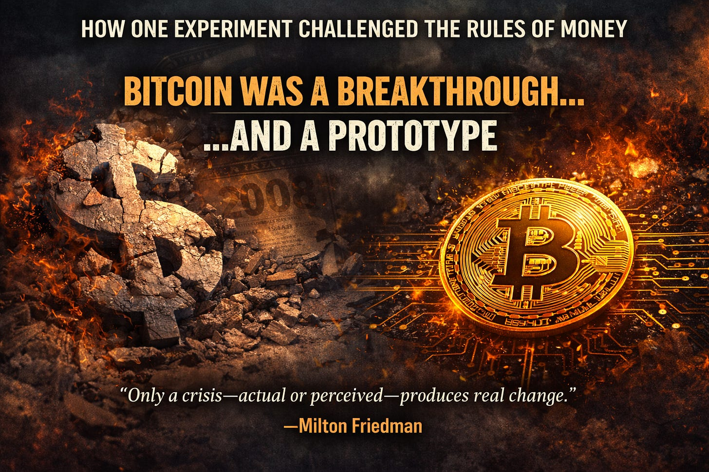
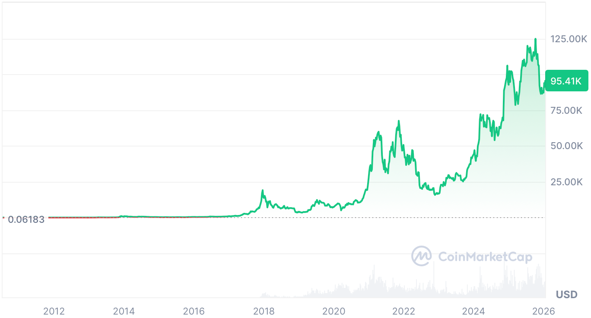

Bitcoin did not emerge in a vacuum.

In Part 1, we talked about inflation, its causes, how it effects human behavior, and impacts the world. This was what Bitcoin was intended to fix.
Bitcoin did not emerge in a vacuum.
It was born in the aftermath of the 2008 financial crisis, when institutions that took reckless risks were rescued and the cost was quietly distributed across the public through inflation. Trust collapsed — not because people suddenly became ideological, but because the rules no longer felt reciprocal.
Losses were socialized.
Gains were privatized.
And ordinary people were told this was the price of stability.
The same thing happened again in 2020 to an even greater degree.
Satoshi Nakamoto’s whitepaper was not merely technical. It was a challenge to monetary monopoly — and to the idea that trust must always be placed in institutions.
“The root problem with conventional currency is all the trust that’s
required to make it work.”
— Satoshi Nakamoto
To understand why Bitcoin mattered — and why it ultimately stalled — we need to be clear about what money actually is.
Money is not just a medium of exchange, a unit of account, or a store of value.
Money is governance.
It encodes incentives and shapes behavior at scale. It determines who bears risk and who avoids it. It decides whether patience is rewarded or punished. It functions as a measure of belief — valuable because people collectively agree it is — and as state power. Control the currency, and you control taxation, debt, and the ability to fund force.
Throughout history, monetary authority and political authority have been inseparable for a simple reason: money coordinates behavior more effectively than law.
Bitcoin challenged this arrangement by proposing something radically different.
“The purpose of a system is what it does”
Bitcoin proved something unprecedented: that monetary rules could be enforced by code and consensus rather than by institutions.
Proof-of-Work was not merely a security mechanism. It was a decentralized decision process — a way to agree on history and enforce rules without permission. The fixed supply was not just scarcity, but an attempt to encode long-term thinking directly into the system.
In a world dominated by inflation and short time horizons, Bitcoin offered something genuinely new:
Rules without rulers.
“Bitcoin is the first example of a decentralized, non-political
monetary system.”
— Andreas Antonopoulos
That achievement should not be minimized. Bitcoin demonstrated that money did not require discretion, committees, or emergency powers to function. It could be governed mechanically, transparently, and predictably.
But Bitcoin also revealed a hard truth.
Enforcing monetary rules is insufficient if access to the system can still be selectively denied.
To function in everyday life, Bitcoin users still depended on exchanges, banks, payment processors, and custodians. These were not edge cases — they were unavoidable interfaces with the real economy.
And every one of them became a chokepoint.
Accounts could be frozen.
Transfers could be blocked.
Services could be terminated — not necessarily for crimes, but for
regulatory risk, political pressure, or compliance ambiguity.
This is not theoretical. We have repeatedly watched lawful users lose access to funds because an intermediary decided the risk profile had changed.
Bitcoin worked — until you needed groceries or to pay your mortgage.
Sovereignty that only works until you need groceries isn’t sovereignty.
This was not a failure of cryptography. It was a structural limitation: Bitcoin solved rule enforcement, but not permissionless access to everyday economic life.
“Show me the incentive and I’ll show you the outcome.”
— Charlie Munger
Over time, Bitcoin equilibrated into a role institutions were comfortable with; and the incentives encouraged.
Digital gold.
A scarce asset to be held rather than spent.
Speculated on rather than used as everyday money.
This outcome was not the result of conspiracy or betrayal. It was the predictable result of incentives.
A fixed supply strongly rewards hoarding over circulation. Volatility makes Bitcoin unsuitable as a unit of account — wages, rent, and contracts still must be denominated in fiat to manage risk. Pure deflation discourages productive investment by rewarding delay.

Most importantly, Bitcoin lacks a native redemption loop — a built-in reason the currency must be spent to do something useful inside the system. Value enters primarily through speculation and exits through exchanges.
As a result, Bitcoin never escaped being priced in dollars.
“Every system is perfectly designed to get the results it
gets.”
— W. Edwards Deming
Bitcoin did not fail.
It reached equilibrium.
I am not writing this as an outside observer.
My name is Shammah Chancellor. I spent years as a software engineer in the Bay Area, including at Cloudflare — one of the core infrastructure companies of the modern internet.
In 2017, I left a stable, well-paid job to work full-time on Bitcoin Cash. I did so because I believed that peer-to-peer electronic cash could change how people coordinated economically — not as an asset, but as money.
I became a lead developer on Bitcoin Cash, working directly inside the scaling debates, governance conflicts, and funding disputes that followed Bitcoin’s early fragmentation. I was not watching from Twitter. I was in the code, the mailing lists, the emergency calls, and the tradeoffs.
What I saw was not corruption or bad faith.
I saw incentives quietly shaping outcomes.
Short-term incentives overwhelmed long-term ones. Funding structures warped priorities. Governance mechanisms that looked reasonable on paper failed under real incentives. Decisions that made sense locally produced instability globally.
And crucially: Bitcoin Cash inherited the same structural failures as Bitcoin.
Volatility still precluded real use.
Speculation dominated behavior.
External chokepoints controlled access.
Fragmented incentives undermined coordination.
The problem was never block size, personalities, or branding.
The problem was that belief was doing too much work — and incentives were doing too little.
That experience permanently changed how I think about money.
Stablecoins have emerged as a response to Bitcoin’s failures as money. They solved volatility and enabled payments, remittances, and DeFi. For many users, this felt like crypto finally becoming usable.
But stablecoins are a detour, not a destination.
They fix volatility by reintroducing trust in centralized issuers, banks, and regulators — the very institutions this monetary innovation was meant to escape. Pegs to fiat currencies mean they inherit inflation rather than transcend it.
Rather than eliminating chokepoints, stablecoins multiply them:
Issuers must be trusted.
Reserves must be custodied.
Banks and regulators regain leverage over access.
Fragmentation worsens usability. Instead of one money everyone can use, users face dozens of stablecoins with different risks, integrations, and constraints.
Even at massive scale, stablecoins remain largely confined to exchange rails and arbitrage. They move between tokens far more often than they pay rent, wages, or groceries.
Stablecoins solve transactions.
They do not solve sovereignty.
Stability without permissionless access simply builds a more complex cage.
Crypto became faster and more programmable —
but not freer.
Bitcoin was not a failure.
It was a prototype.
It proved that money could be governed by rules rather than discretion. It showed that decentralized consensus could replace institutional trust. It showed that we could build a system with no possibility for inflation.
And it revealed what happens when stability, access, and use are not solved together.
Bitcoin and stablecoins fail at the goal of ending inflation for different reasons, but they share a common blind spot.
Neither solves:
stability without discretionary control
incentives that reward use rather than hoarding
a native redemption loop tied to real utility
permissionless access that cannot be selectively denied
These are not optional features. They are prerequisites for money to function as money rather than speculation.
If crypto ever felt like it promised something real but delivered something incomplete, you were right.
The next step
is not more speculation.
It is not tighter pegs.
It is not belief without structure.
What comes next must align incentives end-to-end — so that stability, access, and use reinforce one another rather than conflict.
If money is governance, then the domain where governance matters most is coordination: the ability to speak, organize, and act together without permission.
The final post in this series explains how those missing pieces fit together — and how a system can be built that lowers time preference without relying on ideology, heroics, or central authority.
Ideas spread through networks.
On average, it takes about six degrees of separation to reach nearly anyone on the planet. A thoughtful reshare doesn’t vanish — it moves outward, node by node, into circles the original author could never reach alone.
If this piece is widely shared and restacked, it has a real chance of reaching people who think deeply about systems and incentives — people like Balaji Srinivasan, Elon Musk, or Vitalik Buterin — not because of ideology, but because the problem is structural and the solution is peaceful.
This doesn’t require mass adoption or millions of believers. It only takes one serious patron — one reasonable philanthropic grant — to turn a well-designed prototype into a real, testable system.
If this resonated, sharing it isn’t performative. It’s participatory.
Awareness is the first step.
Coordination is the second.
Building it is the third.
If you believe peaceful economic competition beats collapse or revolution, consider subscribing, restacking, and sharing.